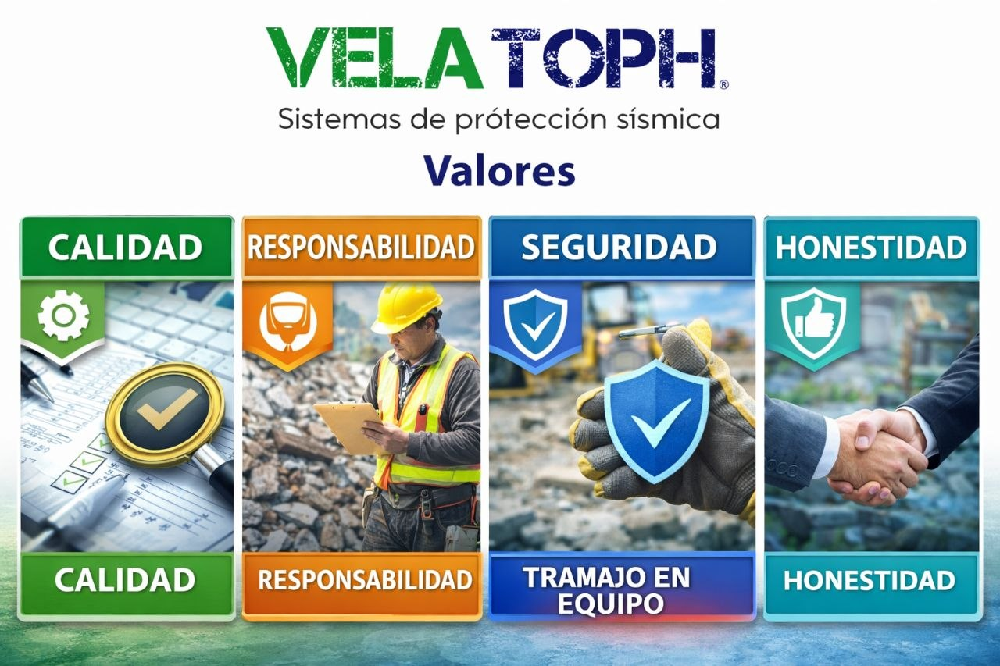
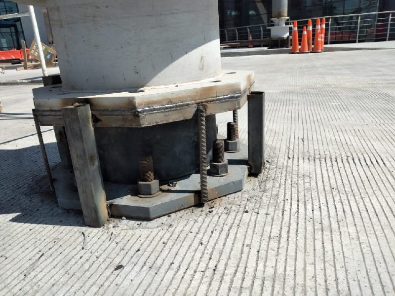
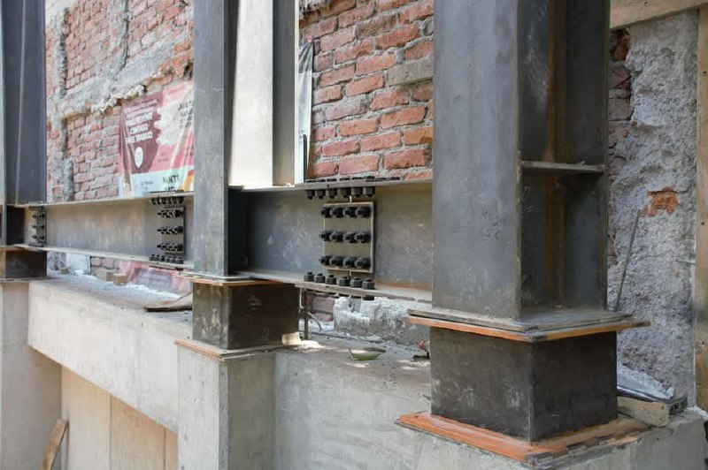

FPS
Sistemas de fricción pendular para desacoplar parte del movimiento sísmico y mejorar el desempeño estructural en proyectos que requieren alta confiabilidad.

Disipadores sísmicos de fricción
Elementos que ayudan a absorber energía y reducir deformaciones, movimientos excesivos y niveles de daño en ciertos sistemas estructurales.

LDRB
Sistema pensado para soluciones de bajo amortiguamiento con aplicaciones relevantes en vivienda y proyectos donde importan economía, facilidad de instalación y respuesta sísmica mejorada.

LRB
Aisladores elastoméricos con núcleo de plomo que ayudan a reducir la demanda sísmica transmitida a la superestructura en aplicaciones seleccionadas.